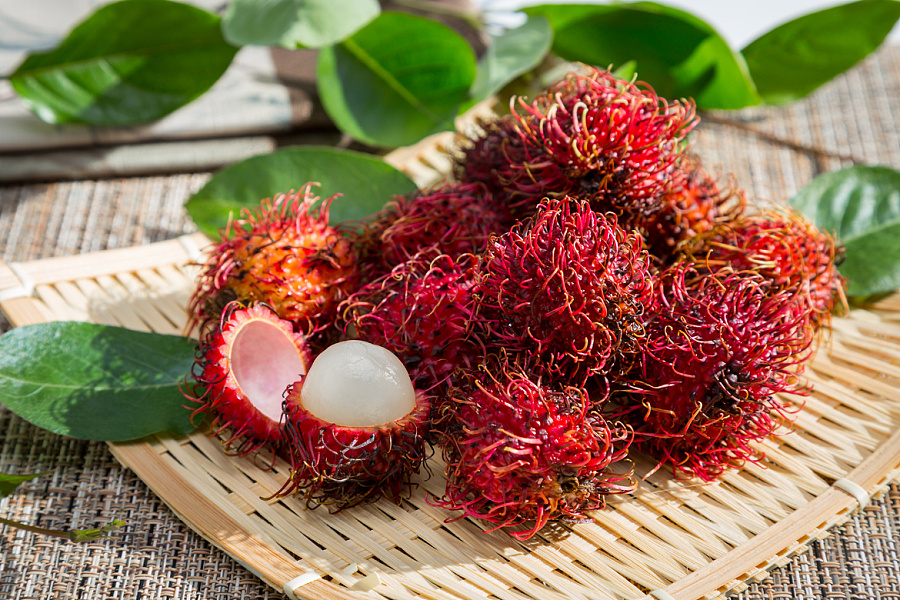

水果，是指多汁且主要味觉为甜味和酸味，可食用的植物果实。水果不但含有丰富的维生素营养，而且能够促进消化。
研究表明，水果腐烂程度越高，链格孢毒素含量越高，离病斑越远的部分，含量则越低。所以，并不是所有烂水果都不能吃。如果机械损伤和冷害的水果，只要没长时间放置，滋生微生物的话，还是可以吃；而对于霉变腐烂的水果，如果霉变的部分不是很严重，挖去病斑外2cm处，剩余部分还可以食用，如果霉变超过水果三分之一甚至一半以上，就不宜食用了。



水果，是指多汁且主要味觉为甜味和酸味，可食用的植物果实。水果不但含有丰富的维生素营养，而且能够促进消化。
研究表明，水果腐烂程度越高，链格孢毒素含量越高，离病斑越远的部分，含量则越低。所以，并不是所有烂水果都不能吃。如果机械损伤和冷害的水果，只要没长时间放置，滋生微生物的话，还是可以吃；而对于霉变腐烂的水果，如果霉变的部分不是很严重，挖去病斑外2cm处，剩余部分还可以食用，如果霉变超过水果三分之一甚至一半以上，就不宜食用了。
水果之家